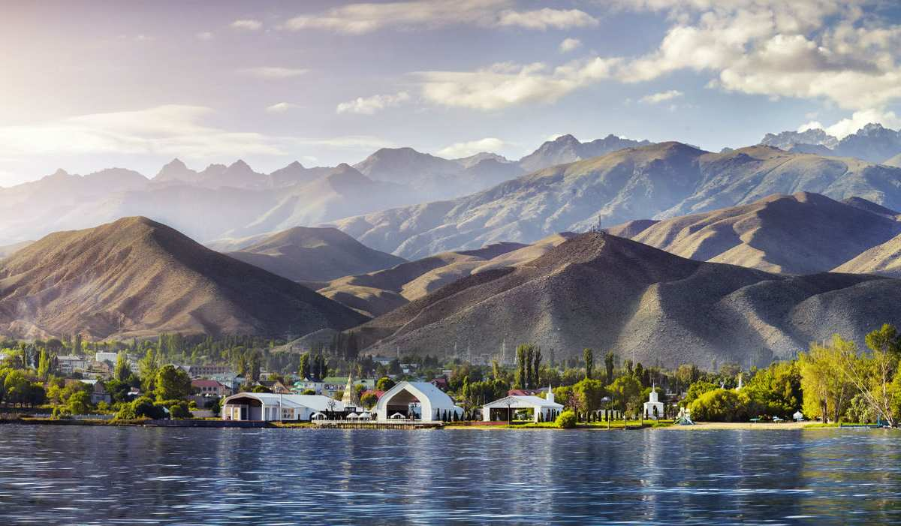

×

Kyrgyzstan
Флаг
Государственный флаг КР представляет собой красное прямоугольное полотнище, в центре которого размещено изображение круглого солнечного диска равномерно расходящимися лучами золотистого цвета (сорок лучей). Внутри солнечного диска помещено изображение тюндюка (кирг. түндүк) киргизской юрты красного цвета.
Герб
Государственный герб КР представляет собой изображение белого сокола с распростёртыми крыльями, помещенного в центре синего круга в белом обрамлении. На заднем плане расположены озеро, отроги гор Ала-Тоо и восходящее солнце с лучами золотистого цвета, помещенных по обе стороны стеблей хлопчатника и пшеничных колосьев. В верхней части круга расположена надпись «Кыргыз», а в нижней его части расположена надпись «Республикасы»
____